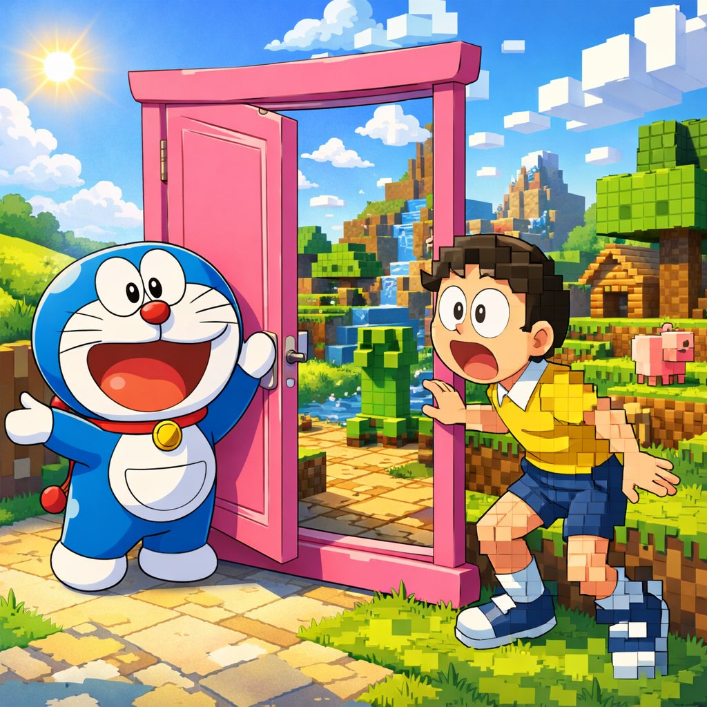
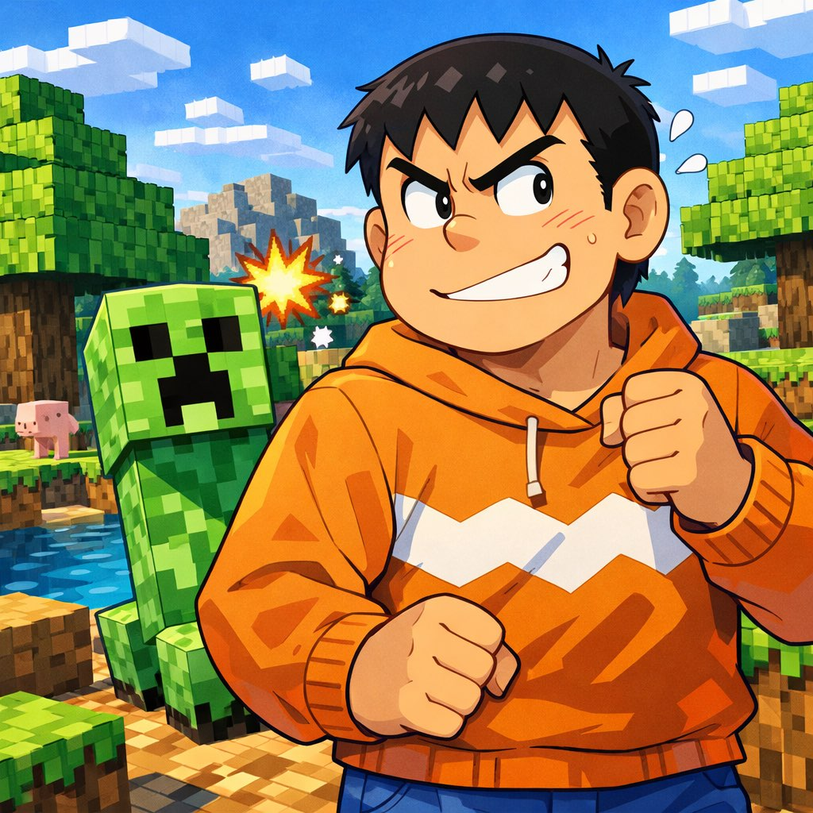
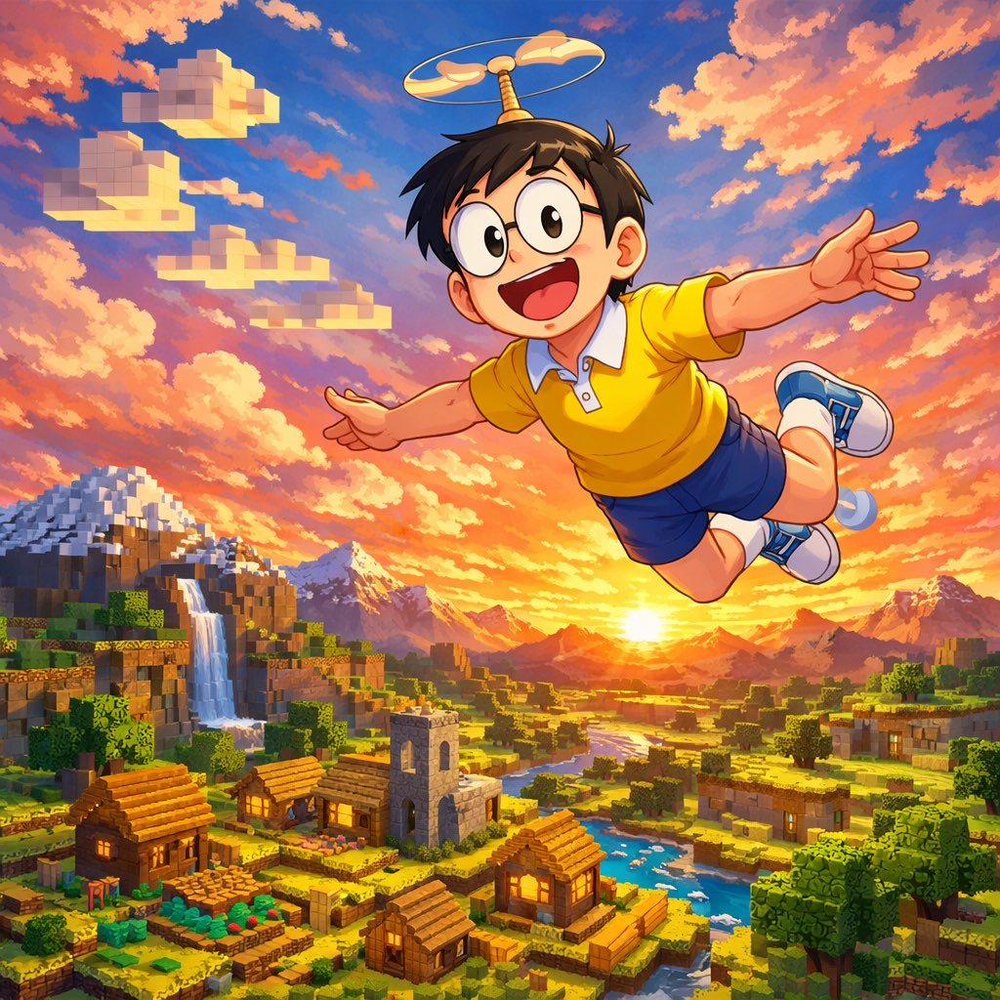
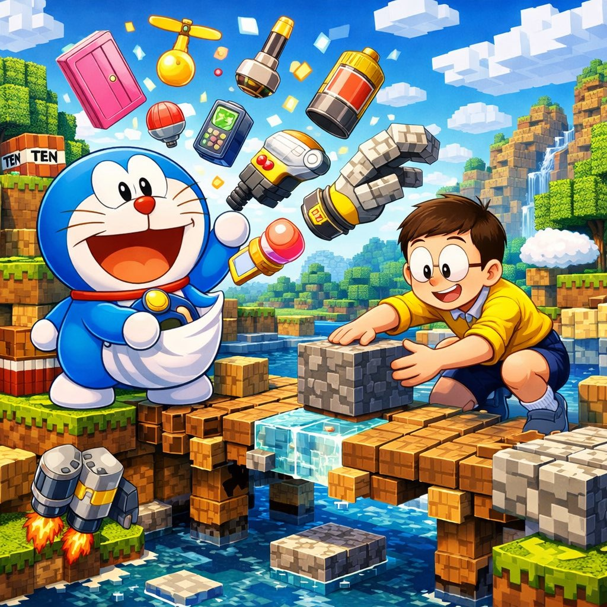
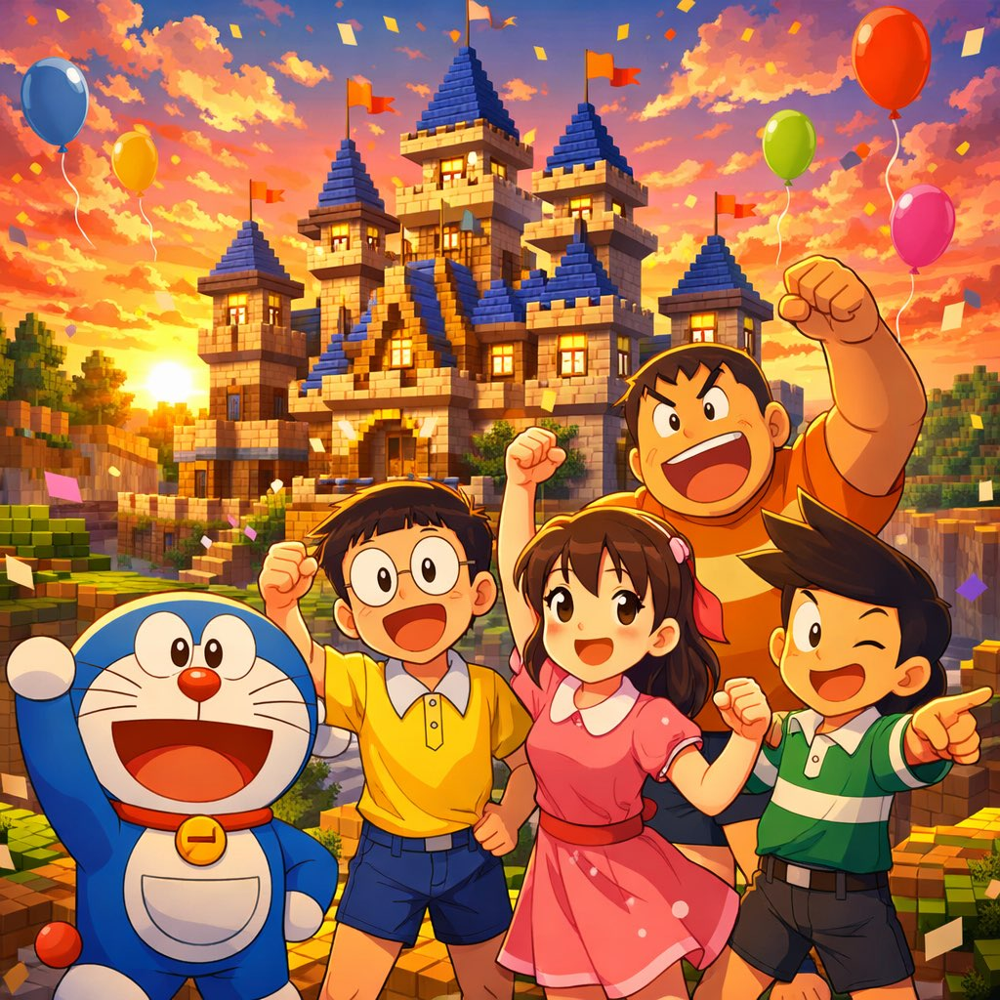

第一章 · 意外的传送门

放学后，大雄照例哭着跑回家："哆啦A梦！考试又是零分，妈妈要杀我了！"
哆啦A梦叹了口气，掏出任意门："你想去哪？"
"一个没有考试的世界！"大雄一把推开粉色大门——
然后他愣住了。
眼前的一切都变成了……方块。树是方的，云是方的，连地上的草都是一格一格的。
大雄
哆、哆啦A梦……这是什么地方？为什么我的手也变方了？！😱
哆啦A梦
任意门好像出了bug……这里是"我的世界"！一个所有东西都是方块的世界 🟩
🚪 → 🟩🟩🟩
第二章 · 方块世界生存记

正当两人手足无措时，身后传来熟悉的吼声。
"大雄！你又逃到奇怪的地方了！"胖虎不知怎么也跟了进来，挥着拳头四处张望。
"这破地方连个能揍的人都没有……"
话音未落，一个绿色生物悄悄走到胖虎身后。
"嘶嘶嘶嘶——"
💥💥💥
胖虎被炸飞到三格高的空中，摔在一棵方块树上。
胖虎
这什么破绿色怪物！！看我不揍扁它——等等，它又来了？！😤💥
哆啦A梦
那是苦力怕！靠近就会爆炸！快跑！🏃♂️💨
💥🟩😤🌳
第三章 · 道具联合大作战

苦力怕大军从四面八方涌来，哆啦A梦掏出四次元口袋的道具，大雄则学会了这个世界的规则——挖矿、合成、建造。
两个世界的力量，开始融合。
竹蜻蜓让大雄飞越了MC世界的高山，从空中侦察苦力怕的巢穴位置。
缩小灯把胖虎缩成两格高，钻进矿洞挖出钻石。
而大雄——平时什么都做不好的大雄——竟然在MC的合成台前找到了天赋。
大雄
原来合成东西这么简单！3个钻石+2根木棍=钻石镐！这比数学题好懂多了！✨
🔧⛏️💎🚀
第四章 · 搭桥回家

任意门修好了，但要回去需要一座连接两个世界的桥。
哆啦A梦用"空气炮"清理出一条路，大雄用MC方块一格一格搭建桥面，胖虎负责扛最重的黑曜石，小夫负责抱怨——但其实偷偷在放火把照明。
静香在桥的另一头喊："你们快点！铜锣烧快凉了！"
哆啦A梦的建桥速度瞬间翻了三倍。

当最后一块方块落下，两个世界被一道彩虹般的光连接在一起。
大雄站在桥上，回头看了一眼方块世界。
"其实……这里挺好的。没有考试，挖矿就能变强，搭桥就能回家。"
哆啦A梦笑了："你看，你不笨嘛。只是教室太小，装不下你的天赋。"